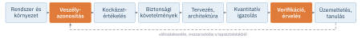
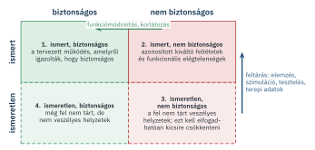
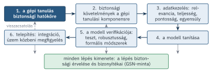
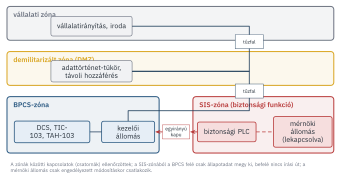
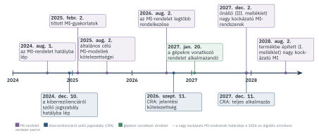

18. Új kihívások: rendeltetésszerű funkció, mesterséges intelligencia és kiberbiztonság

A könyv eddigi módszerei egy közös feltevésre épültek: a veszélyes helyzetek forrása valaminek a meghibásodása (egy alkatrész, egy szoftver, egy emberi művelet), vagy legalábbis az elemek közötti nem szándékolt kölcsönhatás. Három fejlemény ezt a képet alapjaiban bővíti. Az automatizált járművek és robotok veszélyt okozhatnak úgy is, hogy semmi sem hibásodik meg, egyszerűen azért, mert a funkciójuk teljesítőképessége egy adott helyzetben nem elegendő. A gépi tanulással készült komponensek viselkedését nem egyenként megírt követelmények, hanem adatok határozzák meg, és a hagyományos verifikációs módszerek nagy része nem alkalmazható rájuk. A hálózatba kapcsolt rendszerekben pedig egy szándékos támadás is veszélyes helyzetet teremthet, amely ellen a valószínűségi modellek nem védenek. Ez a fejezet ezt a három kihívást, a rájuk adott szabványosítási és szabályozási válaszokat, végül a mesterséges intelligencia szerepét a biztonsági mérnök munkájában tekinti át.
A fejezet végére képes leszel
- megkülönböztetni a funkcionális biztonság és a rendeltetésszerű funkció biztonságának (SOTIF) tárgykörét, és alkalmazni a SOTIF négy területének gondolatmenetét;
- megbecsülni, mekkora üzemi tapasztalat kell egy automatizált rendszer biztonságának statisztikai igazolásához;
- összefoglalni a gépi tanulási komponensek biztonságának fő kihívásait és az AMLAS, az ISO/PAS 8800 és az ISO/IEC TR 5469 válaszait;
- biztonsági architektúrát javasolni gépi tanulási komponenst tartalmazó rendszerre;
- elemezni a kiberbiztonság és a funkcionális biztonság kapcsolatát, és alkalmazni az IEC 62443 zóna- és csatornamodelljét;
- áttekinteni az MI-rendelet, a gépekre vonatkozó rendelet és a kiberrezilienciáról szóló jogszabály biztonsági vonatkozásait és ütemezését;
- felelősen használni a nagy nyelvi modelleket a biztonsági elemzések támogatására.
18.1. A rendeltetésszerű funkció biztonsága
A 2018-as tempei baleset (1. fejezet) jól mutatja a problémát: az automatizált jármű érzékelői működtek, a szoftver a specifikációja szerint futott, mégis halálos baleset történt, mert a rendszer nem tudta időben helyesen osztályozni a kerékpárját toló gyalogost (National Transportation Safety Board 2019). Az ISO 26262 a hibák és a meghibásodások okozta veszélyekkel foglalkozik, ezért ilyen esetekre nem ad választ. Ezt a rést tölti ki az ISO 21448, a rendeltetésszerű funkció biztonsága (safety of the intended functionality, SOTIF) (ISO 2022).
A SOTIF szerint veszélyt okozhatnak a funkcionális elégtelenségek: a specifikáció hiányosságai (a tervezők nem gondoltak egy helyzetre) és a teljesítőképesség korlátai (az érzékelő vagy az algoritmus egy helyzetben nem elég pontos). Ezeket kiváltó feltételek (triggering conditions) hozzák felszínre: alacsonyan álló nap, köd, erős eső, tükröződő felület, szokatlan alakú tárgy, váratlan emberi viselkedés. A SOTIF célja, hogy a lehetséges forgatókönyveket négy területre osztva (18.1. ábra) a nem biztonságos ismert (2.) és különösen a nem biztonságos ismeretlen (3.) területet elfogadhatóan kicsire csökkentse. Az ismert veszélyes forgatókönyveket funkciómódosítással kezeljük (jobb érzékelés, érzékelőfúzió, a működési tartomány korlátozása, a vezető figyelmeztetése); az ismeretlen területet pedig elemzéssel, szimulációval, célzott teszteléssel és a terepi adatok gyűjtésével „tárjuk fel”, azaz ismertté tesszük.

A SOTIF kulcsfogalma a működési tervezési tartomány (operational design domain, ODD): azoknak a körülményeknek a köre (úttípus, sebesség, időjárás, napszak, forgalmi helyzetek), amelyekre a rendszert tervezték. A biztonsági igazolás csak az ODD-n belül érvényes, és a rendszernek fel kell ismernie, ha elhagyja azt. Az automatizált vezetési rendszerek tervezésére, verifikációjára és validálására az ISO/TS 5083 ad átfogó keretet, amely a funkcionális biztonságot, a SOTIF-ot és a kiberbiztonságot egyetlen biztonsági érvelésbe foglalja (ISO 2025); az ENSZ 157. számú előírása pedig a sávtartó automatizált rendszerek jóváhagyási követelményeit rögzíti (UNECE 2021b).
A vészfékező asszisztens SOTIF-elemzése két irányban keres kiváltó feltételeket. A téves fékezés (fantomfékezés) jellegzetes kiváltói: hidak és felüljárók, amelyeket a radar akadálynak érzékel; az úttestbe épített fémfedlapok és -lemezek erős radarvisszaverődése; a kamerát elvakító alacsony nap; árnyékok és útburkolati jelek, amelyeket a képfeldolgozás tárgynak vél. A fékezés elmaradásának kiváltói: sötét ruhás gyalogos éjszaka, szokatlan alakú tárgy (például kerékpárt toló ember vagy egy felborult jármű), köd és erős eső. A funkciómódosítások: a radar és a kamera eredményének összevetése (a téves fékezés ellen mindkettő megerősítése, a fékezés elmaradása ellen a figyelmeztetés már egyetlen érzékelő jelzésére), a működés korlátozása rossz látási viszonyok között, és a vezető tájékoztatása. Az ismeretlen terület csökkentésére a gyártó nagy mennyiségű terepi adatot és szimulált forgatókönyvet elemez, és a kiadott járművek adataiból folyamatosan keresi az új kiváltó feltételeket.
18.1.1. Mennyi tesztelés kell?
Az automatizált járművek biztonságának egyik kézenfekvő igazolása az lenne, hogy elég sokat vezetünk velük baleset nélkül. A 8. fejezet megbízhatósági becslései megmutatják, miért nem járható ez az út. Ha egy rendszer \(t\) ideig (vagy távolságon) hibamentesen működött, akkor \(C\) konfidenciaszinten a hibagyakoriság felső korlátja \(\lambda_C = -\ln(1 - C)/t\). Kalra és Paddock ezt az amerikai közúti halálozási gyakoriságra alkalmazta, amely 2013-ban körülbelül 1,09 haláleset volt százmillió mérföldenként (Kalra és Paddock 2016). Ahhoz, hogy 95%-os konfidenciával kimutassuk, hogy egy automatizált járműflotta legalább ilyen jó, halálos baleset nélkül
\[ t = \frac{-\ln(1 - 0{,}95)}{1{,}09\cdot10^{-8}\ \text{mérföld}^{-1}} = \frac{3{,}0}{1{,}09\cdot10^{-8}} \approx 2{,}75\cdot10^{8}\ \text{mérföld} \]
vezetés kellene, és annak kimutatásához, hogy lényegesen jobb is, nagyságrendekkel több. Ez a gondolatmenet ugyanaz, amelyet Butler és Finelli a szoftverekre alkalmazott (15.1. szakasz): a nagyon ritka eseményekre vonatkozó biztonsági állítás nem igazolható pusztán üzemi tapasztalattal. A megoldás a forgatókönyv-alapú validálás, amely a releváns és a kritikus helyzeteket szisztematikusan azonosítja, szimulációban és tesztpályán vizsgálja, és a közúti tapasztalatot ennek kiegészítésére használja (Koopman és Wagner 2016); valamint a biztonsági érvelés, amely ezeket a bizonyítékokat összefogja, és az üzemeltetés során folyamatosan frissül (17.5. szakasz) (UL Standards & Engagement 2023).
18.2. Gépi tanulás a biztonságkritikus rendszerekben
A gépi tanulási (ML) komponensek, különösen a mély neurális hálók, olyan feladatokban érnek el kiemelkedő teljesítményt, amelyekre hagyományos algoritmust nem lehet írni: képek és jelenetek értelmezésében, összetett mintázatok felismerésében, az emberi viselkedés előrejelzésében. A biztonsági igazolás szempontjából azonban alapvetően különböznek a hagyományos szoftvertől:
- Az adat a specifikáció. A komponens viselkedését nem egyenként megírt követelmények, hanem a tanítóadatok határozzák meg. Ha egy helyzet nem szerepel megfelelő arányban az adatokban, a modell viselkedése ott kiszámíthatatlan.
- Eloszláseltolódás. A modell a tanítási adatok eloszlásán működik jól; ha a valós környezet ettől eltér (új járműtípusok, más éghajlat, kopott útburkolati jelek), a teljesítmény észrevétlenül romolhat.
- Robusztusság. Szegedy és munkatársai kimutatták, hogy szemmel észrevehetetlen, gondosan megválasztott változtatások a bemeneten egy neurális hálót teljesen téves osztályozásra késztethetnek (Szegedy és mtsai. 2014); ez egyszerre biztonsági és kiberbiztonsági kockázat.
- Átláthatatlanság. A modell belső működése nem vezethető vissza ember által érthető szabályokra, ezért a hagyományos felülvizsgálat és a strukturális lefedettség nem alkalmazható.
- Nem szándékolt optimalizálás. Amodei és munkatársai számos módját írták le annak, ahogyan egy tanuló rendszer a célfüggvényét a tervezők szándékával ellentétesen, nem kívánt mellékhatásokkal teljesítheti (Amodei és mtsai. 2016).
Salay, Queiroz és Czarnecki elemzése szerint az ISO 26262 szoftverfejlesztési módszereinek jelentős része csak részben vagy egyáltalán nem alkalmazható a gépi tanulási komponensekre (Salay és mtsai. 2017). Erre a kihívásra az elmúlt években több útmutató és szabvány született.
Az AMLAS (Assurance of Machine Learning for use in Autonomous Systems) a York-i Egyetem módszertana, amely a gépi tanulási komponens fejlesztését hat lépésre bontja, és mindegyikhez egy biztonsági érvelési mintát és a szükséges bizonyítékokat rendeli (18.2. ábra) (Hawkins és mtsai. 2021): a gépi tanulás biztonsági hatókörének meghatározása, a komponens biztonsági követelményei (például a teljesítmény, a robusztusság és az értelmezhetőség követelményei), az adatkezelés (a tanító-, a validáló- és a tesztadatok relevanciája, teljessége, pontossága és kiegyensúlyozottsága), a modell tanítása, a modell verifikációja (független tesztadatokon, robusztussági vizsgálatokkal, ahol lehet, formális módszerekkel), végül a telepítés és az üzem közbeni megfigyelés.

Az ISO/PAS 8800 a közúti járművek mesterséges intelligenciát tartalmazó rendszereinek biztonságára ad útmutatást: az ISO 26262 és az ISO 21448 kiegészítéseként az MI-alapú rendszerelemek biztonsági életciklusát, a biztonsági követelmények levezetését, az adatok életciklusát és az üzem közbeni megfigyelést szabályozza (ISO 2024). Az ISO/IEC TR 5469 ágazatfüggetlen technikai jelentés a mesterséges intelligencia funkcionális biztonsági alkalmazásairól: áttekinti, milyen szerepben (a biztonsági funkción belül vagy azon kívül) és milyen feltételekkel használható MI, milyen tulajdonságai befolyásolják a biztonságot, és milyen intézkedések segítenek a kockázatok kezelésében (ISO/IEC 2024).
18.2.1. Architekturális válasz: egyszerűség a bonyolultság felügyeletére
A gépi tanulási komponensek biztonságának talán legerősebb eszköze az architektúra. A Simplex-architektúra gondolata szerint egy nagy teljesítményű, de nehezen igazolható vezérlő mellé egy egyszerű, hagyományos módszerekkel igazolható biztonsági vezérlőt és egy döntési logikát teszünk, amely átkapcsol az egyszerű vezérlőre, ha a rendszer állapota a biztonságos tartomány határához közelít (Sha 2001). Ugyanez a minta jelenik meg a 14.6. szakasz E-Gas felügyeletében és a ReaktorVéd független biztonsági funkciójában: a bonyolult funkciót egy egyszerű, diverz, független felügyelet ellenőrzi. Gépi tanulási komponensekre alkalmazva ez lehet egy fizikai plauzibilitás-ellenőrzés (a jármű nem fékezhet erősen, ha egyik független érzékelő sem lát akadályt), egy hagyományos érzékelőre épülő biztonsági burok (a robot sebességét a tanúsított lézerszkenner korlátozza, akármit is javasol a kamerás MI), vagy a bemenet eloszláson kívüliségének (out-of-distribution) felismerése, amely ilyenkor egy óvatosabb üzemmódba kapcsol.
A KoboCella fejlesztői szeretnék a lézerszkennert egy kamerás, gépi tanulásos személyfelismerővel kiegészíteni, amely a szerelő testtartását és mozgásának irányát is felismeri, és így finomabban szabályozhatná a robot sebességét. A gépekre vonatkozó (EU) 2023/1230 rendelet szerint azonban a teljesen vagy részben önfejlesztő viselkedésű, gépi tanulást alkalmazó biztonsági alkatrészek, amelyek biztonsági funkciót látnak el, a fokozott kockázatú termékek közé tartoznak, és bejelentett szervezet bevonásával kell értékelni a megfelelőségüket (Európai Parlament és Tanács 2023). A csapat ezért olyan architektúrát választ, amelyben a biztonsági funkciót továbbra is a tanúsított lézerszkenner és a robotvezérlő kétcsatornás biztonsági része látja el (PLr szerint igazolva); a kamerás MI csak a termelékenységet javítja, a biztonsági határokon belül (például a robot pályáját tervezi át, hogy elkerülje a szerelőt). Az MI hibája így legfeljebb felesleges lassítást okozhat, veszélyes helyzetet nem. Ha a jövőben az MI-t a biztonsági funkcióba is be akarják építeni, az AMLAS-hoz és az ISO/IEC TR 5469-hez hasonló teljes igazolásra lesz szükség.
18.3. Kiberbiztonság és funkcionális biztonság
A biztonsági elemzések hagyományosan véletlen meghibásodásokkal és nem szándékos tévedésekkel számolnak. A támadó azonban nem véletlenszerűen viselkedik: a leggyengébb pontot keresi, több „meghibásodást” idézhet elő egyszerre, és éppen a ritka, nem tesztelt állapotokat használja ki. A valószínűségi modellek függetlenségi feltevései vele szemben értelmetlenek. Ezért a kiberbiztonság (security) nem illeszthető be egyszerűen a megbízhatósági számításokba, hanem külön elemzést és külön intézkedéseket igényel, amelyeket a funkcionális biztonsággal (safety) össze kell hangolni (IEC 2019; Young és Leveson 2014).
Az ipari irányítórendszerek elleni támadások közül a biztonsági mérnök számára a legtanulságosabb a 2017-ben egy közel-keleti petrolkémiai üzemben felfedezett kártevő, amelyet az amerikai hatóságok HatMan, a kutatók Triton vagy Trisis néven írtak le: a támadók a biztonsági műszeres rendszer vezérlőit vették célba, és megpróbálták átprogramozni őket. A támadás azért derült ki, mert a vezérlők hibát észleltek, és biztonságos állapotba, leállásba vitték az üzemet (Cybersecurity and Infrastructure Security Agency 2019). A tanulság súlyos: a biztonsági funkció, az utolsó műszaki védelmi réteg maga is célpont lehet, és egy sikeres támadás egyszerre iktathatja ki a védelmet és idézheti elő a veszélyes helyzetet.
A folyamatiparban az IEC 61511 2016-os kiadása előírja, hogy a biztonsági műszeres rendszerre kiberbiztonsági kockázatértékelést kell végezni (IEC 2016), az ipari automatizálás kiberbiztonságának szabványsorozata pedig az IEC 62443. Ennek alapgondolata a zónák és csatornák modellje (18.3. ábra): a rendszert azonos biztonsági követelményű zónákra osztjuk, a zónák közötti kommunikációt ellenőrzött csatornákra korlátozzuk, és minden zónához célzott biztonsági szintet rendelünk (IEC 2009--2024). A közúti járművekben az ISO/SAE 21434 a kiberbiztonsági mérnöki folyamatot, benne a fenyegetés- és kockázatelemzést (TARA) szabályozza (ISO/SAE 2021), az ENSZ 155. számú előírása pedig 2024 júliusától minden új jármű forgalomba helyezésének feltétele egy tanúsított kiberbiztonsági irányítási rendszer (UNECE 2021a).

A biztonság és a kiberbiztonság nemcsak kiegészítik, hanem befolyásolhatják is egymást. Egy kiberbiztonsági intézkedés veszélyeztetheti a biztonságot: ha a kezelői állomás néhány hibás jelszó után zárol, egy vészhelyzetben a kezelő kizárhatja magát; ha egy biztonsági frissítés a biztonsági PLC szoftverét módosítja, az újra validálást igényel. Fordítva, egy biztonsági funkció kiberbiztonsági kockázatot teremthet: egy távoli kioldás-visszaállítási lehetőség támadási útvonal lehet. Ezért a két terület elemzését közös keretben érdemes végezni; az STPA rendszerelméleti megközelítése (7. fejezet) például kiterjeszthető a nem biztonságos irányítási műveletek szándékos előidézésére is (STPA-Sec) (Young és Leveson 2014).
A ReaktorVéd kiberbiztonsági kockázatértékelése megállapította, hogy a biztonsági PLC diagnosztikai adatait a karbantartók a vállalati hálózatról is szeretnék látni, és a mérnöki állomás az eredeti tervben állandóan csatlakozott a biztonsági hálózathoz. A módosított architektúrában a biztonsági funkció önálló zóna; a BPCS felé csak egy egyirányú adatkapun keresztül megy ki állapotadat; a mérnöki állomás csak engedélyezett módosításkor, fizikai kulccsal csatlakoztatható; a biztonsági PLC-n a program módosítása csak a helyszínen, kulcskapcsolóval engedélyezhető. A biztonsági érvelés (17. fejezet) G5 ága kiegészül egy állítással: a biztonsági funkció integritását kiberbiztonsági intézkedések védik, és a feltevések (például hogy a mérnöki állomás csak engedéllyel csatlakozik) teljesülését a változáskezelés és az auditok ellenőrzik.
18.4. A szabályozás új rétegei
Az Európai Unióban három új rendelet alakítja át a biztonságkritikus termékek szabályozását (18.4. ábra).
A gépekre vonatkozó (EU) 2023/1230 rendelet 2027. január 20-tól váltja fel a gépi irányelvet. Az új rendelet kifejezetten kezeli a mesterséges intelligenciát és a kiberbiztonságot: a gépeknek a kiszámíthatóan változó, önfejlesztő viselkedés mellett is biztonságosnak kell maradniuk, és a biztonsági funkciókat védeni kell a rosszindulatú befolyásolással szemben (Európai Parlament és Tanács 2023).
A mesterséges intelligenciáról szóló (EU) 2024/1689 rendelet (MI-rendelet) kockázatalapú szabályozást vezet be. A nagy kockázatú MI-rendszerek közé tartoznak azok, amelyek az uniós harmonizációs jogszabályok (például a gépekre, a játékokra, az orvostechnikai eszközökre vonatkozó szabályok) hatálya alá tartozó termékek biztonsági alkatrészei. Rájuk kockázatkezelési rendszer, adatkezelési követelmények, műszaki dokumentáció, naplózás, átláthatóság, emberi felügyelet, valamint pontossági, robusztussági és kiberbiztonsági követelmények vonatkoznak (Európai Parlament és Tanács 2024a). A nagy kockázatú rendszerekre vonatkozó kötelezettségek alkalmazását a 2026 júliusában kihirdetett digitális omnibusz-rendelet elhalasztotta: az önálló (III. mellékletbeli) rendszerekre 2027. december 2-tól, a termékekbe biztonsági alkatrészként beépített (I. mellékletbeli) rendszerekre 2028. augusztus 2-tól kell alkalmazni őket (Európai Parlament és Tanács 2026).
A kiberrezilienciáról szóló (EU) 2024/2847 rendelet a digitális elemeket tartalmazó termékekre ír elő kiberbiztonsági követelményeket a teljes életciklusra, a sérülékenységek kezelésével és a biztonsági frissítésekkel együtt. A súlyos incidensek és az aktívan kihasznált sérülékenységek jelentési kötelezettsége 2026. szeptember 11-től, a rendelet többi része 2027. december 11-től alkalmazandó (Európai Parlament és Tanács 2024b).

A három rendelet egymásra épül: egy MI-alapú biztonsági alkatrészt tartalmazó, hálózatba kapcsolt gépre egyszerre vonatkozhat mindhárom. A harmonizált szabványok kidolgozása folyamatban van, és a következő években várhatóan a funkcionális biztonsági szabványok (köztük az IEC 61508 harmadik, 2027-re várt kiadása) is beépítik az MI-re és a kiberbiztonságra vonatkozó követelményeket. A mérnöki gyakorlat szempontjából a legfontosabb üzenet: a biztonság, a kiberbiztonság és az MI megbízhatósága nem kezelhető külön silókban; közös kockázatelemzés, közös architektúra és közös, élő biztonsági érvelés kell hozzájuk.
18.5. A mesterséges intelligencia mint a biztonsági mérnök eszköze
A nagy nyelvi modellek a biztonsági mérnök munkáját is megváltoztatják. Segíthetnek a veszélyazonosítás ötletgyűjtésében (vezérszavas eltérések, meghibásodási módok, nem biztonságos irányítási műveletek felvetésében), a szabványok és a szakirodalom áttekintésében, a dokumentáció előkészítésében, a számítások ellenőrzésében és a gyakorlati útmutató notebookjaihoz hasonló elemző kódok megírásában. Diemert és Weber kísérleti vizsgálata szerint egy nagy nyelvi modell hasznos javaslatokkal segítheti a veszélyelemzést, de a javaslatok egy része téves vagy irreleváns, és a modell nem helyettesíti a szakértői ítéletet (Diemert és Weber 2023).
A felelős használat elvei a 16. fejezet automatizálási tanulságaiból következnek: a modell ötletgyűjtő partner, nem döntéshozó; minden állítását ellenőrizni kell, különösen a számokat, a szabványhivatkozásokat és a jogi állításokat; vigyázni kell az automatizálási torzításra, amely a gépi javaslatot hajlamos elfogadni akkor is, ha a saját tudásunk ellentmond neki; a bizalmas tervadatokat csak megfelelő adatvédelmi feltételekkel szabad megosztani; és a biztonsági érvelésben dokumentálni kell, hogy egy elemzésben milyen szerepet játszott a modell, és ki ellenőrizte a kimenetét.
„Egy kollaboratív robotcella STPA-elemzését végezzük. Az irányító a robotvezérlő biztonsági része; irányítási műveletei: sebességcsökkentés, biztonságos megállás, újraindítás. A visszacsatolás a lézerszkenner jele (személy a 0,5 m-es, illetve az 1,2 m-es zónában) és a robot sebességmérése. A veszteség: a szerelő sérülése; a veszély: a robot nagy sebességgel mozog, miközben a szerelő a közös munkatérben van. Mind a négy nem biztonságos irányítási művelet típusára (nem adja ki; kiadja, amikor nem kellene; rossz időben vagy sorrendben adja ki; túl korán leállítja vagy túl sokáig alkalmazza) sorolj fel lehetséges eseteket, és mindegyikhez a kontextust. Utána javasolj okozati forgatókönyveket a visszacsatolás hibáira is. Jelöld, ha egy javaslatod bizonytalan, és ne hivatkozz olyan szabványpontra, amelyben nem vagy biztos.”
A modell válaszát a csapat a saját elemzésével veti össze (7. fejezet); a kimenet csak akkor kerülhet a jegyzőkönyvbe, ha egy szakértő ellenőrizte és elfogadta.
18.6. Kitekintés
A biztonságkritikus rendszerek tudománya az első hibafáktól a tanuló, hálózatba kapcsolt, ember és gép közötti munkamegosztásra épülő rendszerekig jutott. A könyv módszerei ehhez a fejlődéshez három irányban adnak kapaszkodót. A valószínűségi modellek (megbízhatóság, hibafa, eseményfa, Markov-modellek, SIL-igazolás) ott maradnak nélkülözhetetlenek, ahol a meghibásodások véletlenszerűek és az adatok megbízhatók. A rendszerelméleti szemlélet (STAMP, STPA, a biztonsági kultúra, a Safety-II) ott, ahol a balesetek a kölcsönhatásokból, a szervezetből és a változásból fakadnak. A biztonsági érvelés pedig az a keret, amely a kettőt, a tervezési döntéseket és az üzemeltetés tapasztalatait egyetlen, ellenőrizhető és élő egésszé fogja össze. Az új technológiák nem teszik feleslegessé ezeket az eszközöket; éppen ellenkezőleg, a gépi tanulás, az autonómia és a hálózatosodás korában a biztonsági mérnök legfontosabb képessége az lesz, hogy tudja, melyik eszköz mire alkalmas, és mire nem.
A gyakorlati útmutató 12. laborja egy projektfeladat: egy választott rendszerre (például egy automatizált raktári járműre vagy egy orvostechnikai infúziós pumpára) a könyv módszereit végigvezetve kell elkészíteni a veszélyelemzést, a kockázatértékelést, a biztonsági követelményeket, a kvantitatív igazolást és a biztonsági érvelés vázát. Az útmutató mintapromptokat is ad a nagy nyelvi modellek felelős használatához az egyes lépésekben.
- A SOTIF (ISO 21448) a meghibásodás nélkül, a funkcionális elégtelenségekből és a kiváltó feltételekből eredő veszélyekkel foglalkozik; célja a nem biztonságos ismert és ismeretlen forgatókönyvek elfogadhatóan kicsire csökkentése.
- A ritka eseményekre vonatkozó biztonsági állítás nem igazolható pusztán üzemi tapasztalattal: az emberi vezetővel egyenértékű halálozási gyakoriság 95%-os konfidenciájú kimutatásához mintegy 275 millió mérföld kellene; a forgatókönyv-alapú validálás és a biztonsági érvelés a megoldás.
- A gépi tanulási komponensek biztonságának kihívásai: az adat mint specifikáció, az eloszláseltolódás, a robusztusság, az átláthatatlanság és a nem szándékolt optimalizálás; az AMLAS, az ISO/PAS 8800 és az ISO/IEC TR 5469 ad rájuk választ.
- Az architektúra a legerősebb eszköz: egy egyszerű, igazolható felügyelet (Simplex-minta) korlátozza a bonyolult komponens hatását.
- A támadó nem véletlenszerű; a kiberbiztonságot külön, de a funkcionális biztonsággal összehangoltan kell kezelni (IEC 62443, ISO/SAE 21434, IEC 61511 kiberbiztonsági értékelés). A Triton-támadás a biztonsági funkciót vette célba.
- A gépekre vonatkozó rendelet, az MI-rendelet és a kiberrezilienciáról szóló jogszabály 2026 és 2028 között fokozatosan alkalmazandó; a nagy kockázatú MI-rendszerek határidejét a 2026-os digitális omnibusz-rendelet 2027 decemberére, illetve 2028 augusztusára tolta ki.
- A nagy nyelvi modellek hasznos segítők a biztonsági elemzésben, de minden kimenetüket szakértőnek kell ellenőriznie.
- Miben különbözik a fantomfékezés oka egy hibás radarérzékelő okozta téves fékezéstől? Melyik szabvány melyiket kezeli?
- Egy automatizált rendszer hibagyakoriságára \(10^{-7}\) óránkénti felső korlátot szeretnénk igazolni 90%-os konfidenciával, hibamentes üzemi tapasztalatból. Hány üzemóra kell?
- Miért nem elég egy gépi tanulási modell tesztadatokon mért 99,9%-os pontossága a biztonsági igazoláshoz?
- Javasolj Simplex-jellegű architektúrát egy MI-alapú gyalogosfelismerőt tartalmazó vészfékező rendszerre!
- Mondj egy példát arra, amikor egy kiberbiztonsági intézkedés a funkcionális biztonságot rontja, és egyet a fordítottjára!
Megoldás
- A fantomfékezés során semmi sem hibásodik meg: az érzékelés teljesítőképessége egy kiváltó feltétel (például egy híd vagy fémlemez) mellett nem elegendő, ez a SOTIF (ISO 21448) tárgya. A hibás radar okozta téves fékezés meghibásodás következménye, ez az ISO 26262 tárgya.
- \(t = -\ln(1 - 0{,}9)/10^{-7} = 2{,}30\cdot10^{7}\) óra, azaz több mint 2600 év egyetlen rendszerre, vagy például ezer rendszer 2,6 évnyi hibamentes működése.
- Mert a pontosság egy átlag a tesztadatok eloszlásán: nem mond semmit a ritka, de veszélyes helyzetekről, az eloszláson kívüli bemenetekről, a robusztusságról és arról, hogy a tévedések milyen hibák (veszélyes vagy ártalmatlan). A biztonsági követelményeket a veszélyes hibamódokra kell megfogalmazni és igazolni, a működési tartomány teljes lefedésével.
- Például: az MI-alapú felismerő javaslatot tesz a fékezésre, de az erős fékezéshez egy független, hagyományos módszerrel igazolt csatorna (például a radar távolság- és sebességmérése alapján számolt ütközési idő) megerősítése kell; a téves fékezés ellen az MI egyedül csak figyelmeztetést vagy enyhe fékezést kezdeményezhet. Ha a felismerő bemenete eloszláson kívülinek tűnik (például szokatlan időjárás), a rendszer óvatosabb üzemmódba vált, és a vezetőt figyelmezteti.
- Kiberbiztonság rontja a biztonságot: a kezelői állomás zárolása hibás jelszavak után vészhelyzetben kizárhatja a kezelőt; egy kötelező frissítés újravalidálás nélkül megváltoztathatja a biztonsági funkció viselkedését. Biztonság rontja a kiberbiztonságot: egy távoli kioldás-visszaállítás vagy egy állandóan csatlakozó karbantartói hozzáférés, amelyet a gyors helyreállítás érdekében építettek be, támadási útvonalat nyit.
- ISO 21448:2022 – a rendeltetésszerű funkció biztonsága (ISO 2022); ISO/TS 5083:2025 – az automatizált vezetési rendszerek biztonsága (ISO 2025).
- Kalra, N., Paddock, S. M. (2016): Driving to safety. Transportation Research Part A (Kalra és Paddock 2016).
- Hawkins, R. et al. (2021): Guidance on the Assurance of Machine Learning in Autonomous Systems (AMLAS) (Hawkins és mtsai. 2021); ISO/PAS 8800:2024 (ISO 2024); ISO/IEC TR 5469:2024 (ISO/IEC 2024).
- Sha, L. (2001): Using simplicity to control complexity. IEEE Software (Sha 2001).
- IEC 62443 és IEC TR 63069 – az ipari kiberbiztonság és a funkcionális biztonság összehangolása (IEC 2009--2024, 2019).
- (EU) 2023/1230, (EU) 2024/1689 és (EU) 2024/2847 rendelet, valamint a 2026-os digitális omnibusz-rendelet (Európai Parlament és Tanács 2023, 2024a, 2024b, 2026).